Префектура Ниигата · Токамати, Цубамэ, Садо, Идзумодзаки · маршрут
Ниигата и Садо через землю и воду: рисовые террасы, медь, золото и корабли
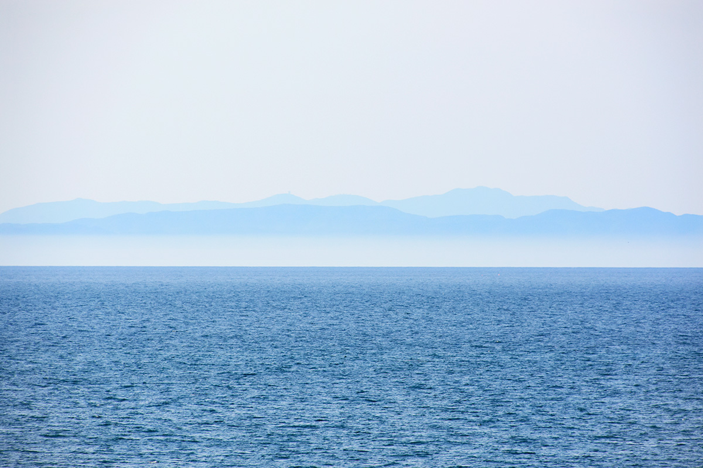
Ниигата славится рисом, рыбой Японского моря и сакэ, но за этим стоят ещё медники, золотоискатели, корабелы и современные художники. Эта статья проводит по префектуре и острову Садо по двум темам: что дала людям земля и что принесла вода.
Земля
Префектура, которую кормят горы и реки
Ниигата тянется вдоль Японского моря. Здесь двенадцать вершин из списка «Ста знаменитых гор Японии», большие реки за века намыли плодородную равнину, а на закате солнце садится прямо в море. Префектуру делят на четыре части: Дзёэцу, Тюэцу, Каэцу и остров Садо. Ниигата первая в стране по урожаю риса сорта коси-хикари, город Цубамэ известен на весь мир обработкой металла, а на Садо больше 400 лет добывали золото.
Если ехать с одной темой, разрозненные места складываются в одну историю. Первая тема это земля: она кормит, даёт материал ремёслам и становится частью искусства. Вторая это вода: морской путь, по которому сюда приходили люди, товары и новые обычаи.
Искусство
Этиго-Цумари: картина из рисовых террас
Главное место, где земля Ниигаты становится искусством, это район Этиго-Цумари на юге префектуры: город Токамати и посёлок Цунан. Здесь проходит фестиваль «Земля искусства» Этиго-Цумари, один из крупнейших международных арт-фестивалей мира. Местные жители работают над ним вместе с известными художниками из Японии и других стран, и работы рассказывают о жизни деревни среди полей и гор. На фестивале 2022 года показали больше 300 работ, а многие из них остаются на своих местах и между фестивалями.
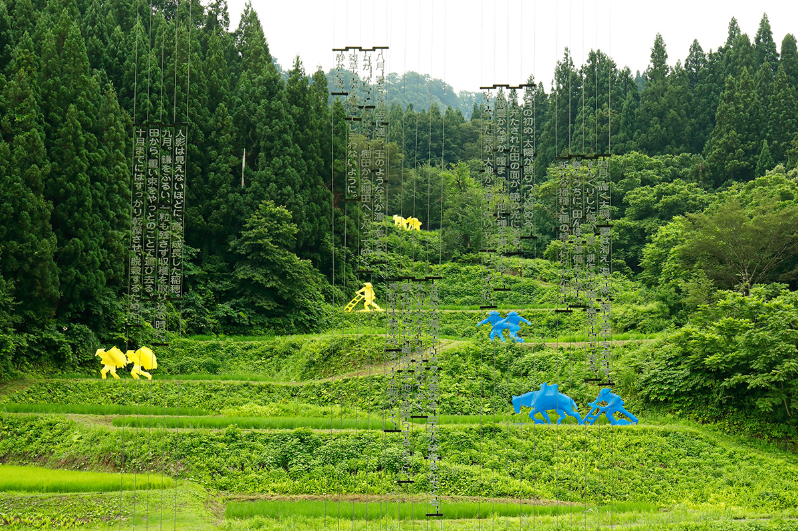
Одна из работ стоит у арт-центра «Нобутай» в Мацудае: «Рисовые террасы» Ильи и Эмилии Кабаковых. Её видно прямо под открытым небом, среди настоящих рисовых полей.
«Рисовые террасы» Ильи и Эмилии Кабаковых
- Адрес
- префектура Ниигата, Токамати, Мацудай, 3743-1, у центра «Нобутай»
- Часы работы
- 10:00–17:00
- Выходные
- вторник, среда (кроме праздников)
Музей Токамати: огненные сосуды дзёмон
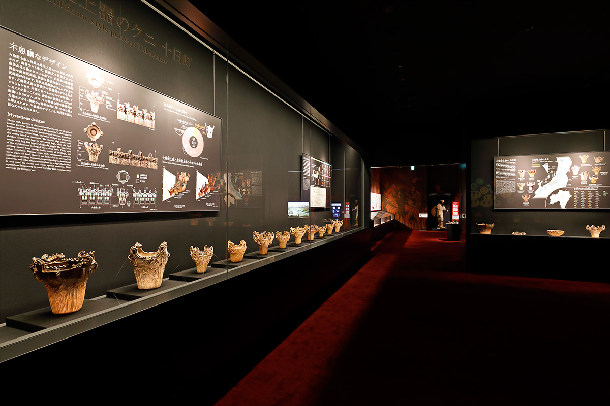
Городской музей Токамати рассказывает, как здешняя земля кормила людей с древности. Главный зал посвящён сосудам с пламенеющим орнаментом с раскопок Сасаяма: это единственная керамика эпохи дзёмон в Японии со статусом национального сокровища, и её можно обойти и рассмотреть со всех сторон. Остальные залы стоит пройти не спеша: можно примерить на себя быт людей эпохи дзёмон, а разделы «История ткачества» и «Снег и река Синано» устроены так, чтобы всё потрогать и почувствовать.
Городской музей Токамати
- Адрес
- префектура Ниигата, Токамати, Ниси-Хоммати, 1-448-9
- Телефон
- +81 25-757-5531
- Часы работы
- 9:00–17:00 (вход до 16:30)
- Выходные
- понедельник (если праздник, то на следующий день)
- Цены / Вход
- 500 иен, до 15 лет бесплатно
«Икотэ»: домашняя еда снежной страны
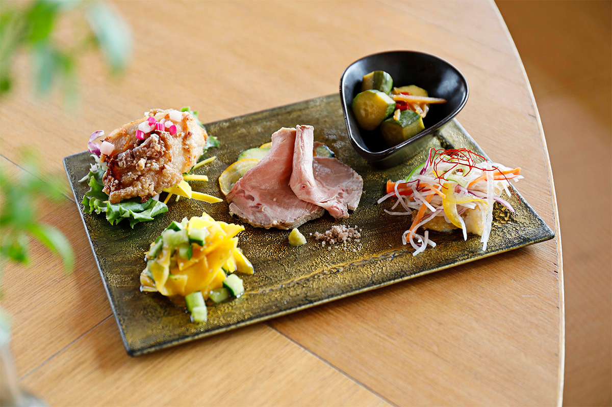
В «Икотэ», центре промышленности и культуры Токамати, готовят домашнюю еду из продуктов местных фермеров и на традиционных приправах, но по-современному. Стоит присмотреться и к самому зданию. Оно построено в духе снежной хижины камакура, символа снежного края: большие балки и выступающие брусья держат широкую крышу. Такой способ строить в Ниигате называют «сэйгай-дзукури».
«Икотэ»
- Адрес
- префектура Ниигата, Токамати, Хоммати, 5-39-6
- Телефон
- +81 25-755-5595
- Часы работы
- обед 11:00–14:00 (последний заказ), кафе 11:00–17:00, ужин 17:00–22:00 (последний заказ в 21:00); ужина нет по воскресеньям и средам
- Выходные
- понедельник
- Сайт
- ikote.net
Металл
Цубамэ и Сандзё: от гвоздей к медной посуде
Цубамэ и соседний Сандзё стали одним из мировых центров обработки металла благодаря той же земле. В эпоху Эдо местность часто затапливало, и крестьяне подрабатывали ковкой гвоздей для деревянных построек. Потом из меди, которую добывали на горе Яхико, начали выколачивать посуду, а из этого умения выросло производство столовых приборов и множества других металлических вещей.
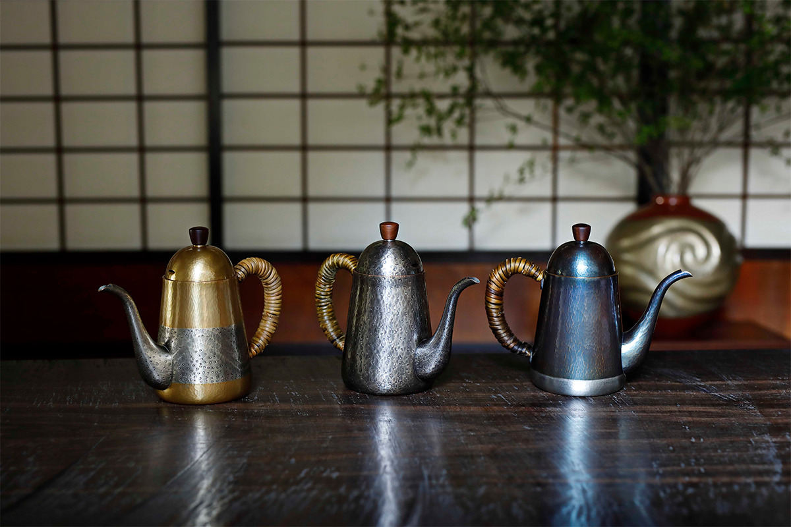
Мастерская Gyokusendo работает с 1816 года. Здесь сохраняют технику цуйки: посуду выколачивают из одного медного листа молотками и чеканами, растягивая и сжимая металл. В мастерской придумали и свои способы окраски меди, например глубокий блестящий цвет «сикин». Медную посуду Gyokusendo ценят знатоки по всему миру, а в мастерской можно увидеть, как её делают по технике, которую передают уже больше двухсот лет.
Gyokusendo, главный магазин в Цубамэ
- Адрес
- префектура Ниигата, Цубамэ, Тюо-дори, 2-2-21
- Телефон
- +81 256-62-2015
- Часы работы
- 8:30–17:30; посещение мастерской по предварительному запросу
- Выходные
- воскресенье, праздники
- Сайт
- gyokusendo.com
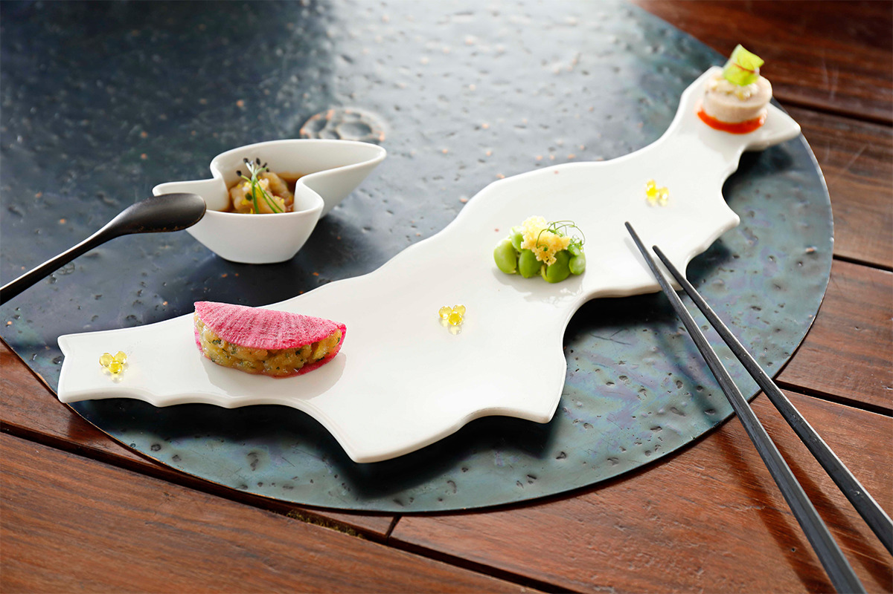
Тем, кто хочет увидеть местные вещи в деле и заодно хорошо поесть, стоит зайти в Tsubamesanjo Bit. Посуда, приборы и обстановка здесь сделаны мастерами Ниигаты, в блюдах много продуктов префектуры, а еду сопровождает проекционное шоу.
Tsubamesanjo Bit, главный ресторан
- Адрес
- префектура Ниигата, Сандзё, Сугоро, 1-17, Центр местной промышленности Цубамэ-Сандзё, 1-й этаж
- Телефон
- +81 256-46-0680
- Часы работы
- обед 11:30–15:00 (последний заказ в 14:30), ужин 18:00–23:00 (последний заказ в 21:30)
- Выходные
- среда (если праздник, то на следующий день)
Золото
Прииски Садо: остров, который чеканил монету
Золотые прииски острова Садо складываются из двух мест: россыпей Нисимикава и рудников золота и серебра Аикава и Цуруси. В эпоху Эдо остров принадлежал напрямую сёгунату, здесь сидел наместник, а золото высокой пробы получали ручным трудом, но в большом, хорошо разделённом на ремёсла производстве. Руду добывали и тут же, в том же районе, чеканили из неё монету. Такой системы не знали больше нигде в мире. В эпоху Мэйдзи на прииски пригласили западных инженеров, добычу механизировали, и Садо много дал модернизации Японии. В 2022 году прииски готовили к номинации в список Всемирного наследия ЮНЕСКО, а в июле 2024 года их внесли в этот список.
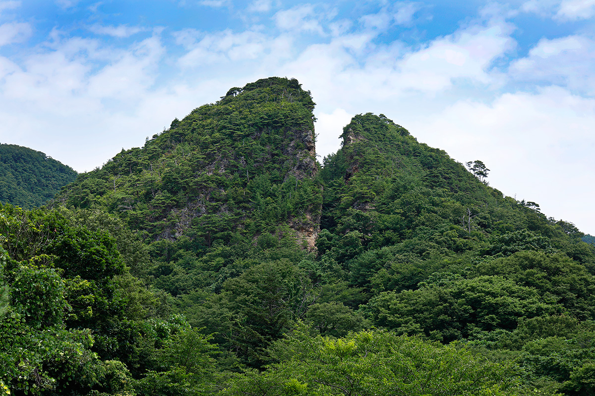
Рудники, остатки резиденции наместника и посёлков хорошо сохранились. Но перед прогулкой по ним лучше зайти в «Кирариум Садо». Это информационный центр о золоте и серебре острова: за 400 лет здесь добыли 78 тонн золота и 2330 тонн серебра. В выставочной части четыре кинозала, история приисков показана на трёхстворчатых экранах и проекциях на макеты.
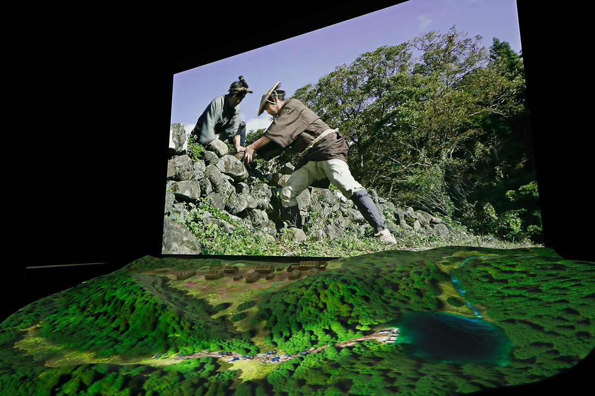
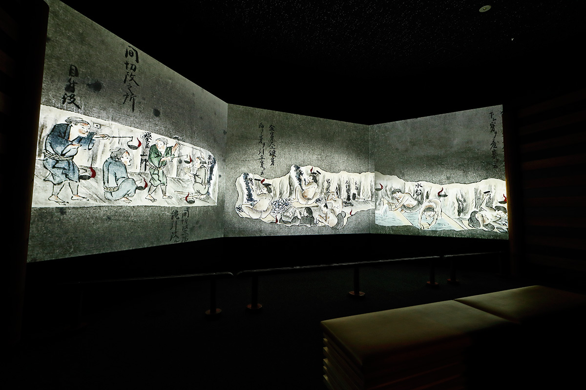
После этого можно спуститься в шахту «Содаю». Это часть настоящей штольни эпохи Эдо, и фигуры людей с инструментами воспроизводят работу горняков такой, как её нарисовали на старинном свитке о приисках Садо.
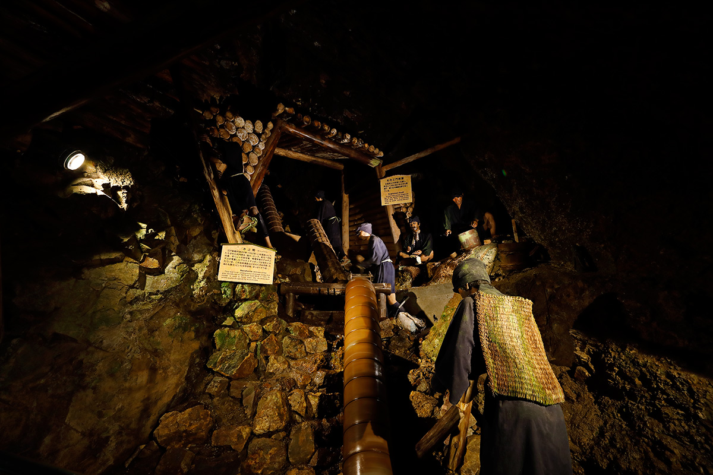
На прииски Садо съезжались рабочие со всей страны и привозили свои верования и обряды. Один из них, обряд «явараги», проводят до сих пор.
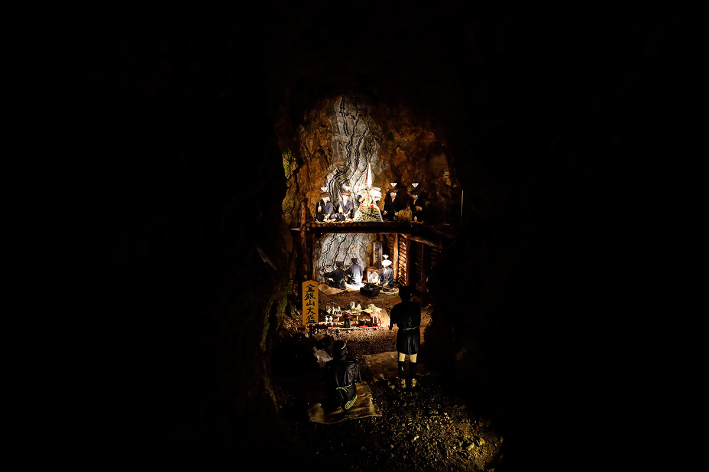
Вода под горой
У золота Садо есть и водная история. Штольни уходили ниже уровня моря, и, если не откачивать подземную воду, добыча вставала. Поэтому за пять лет вручную прорыли водоотводный тоннель «Минамисава сосуйдо» длиной около километра. Его вели одновременно с шести мест, и встречные ходы сошлись с ошибкой меньше метра, так точно умели тогда мерить. Воду поднимали и «суйсёрином», деревянной трубой со спиральной лопастью внутри, которую потом стали ставить и на рисовых полях. А на россыпях Нисимикава землю со склона сбрасывали вниз, пускали на неё воду из запруды и собирали золотой песок, оставшийся на дне. Этот способ назывался «онагаси».
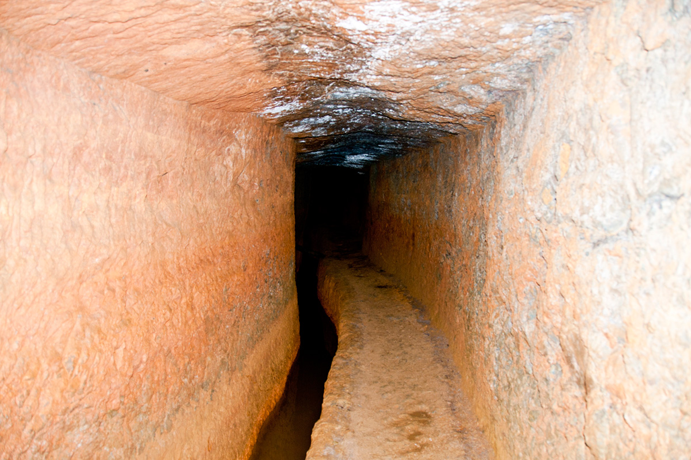
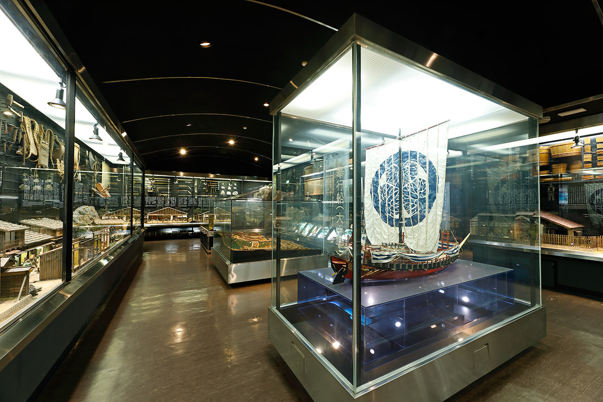
В музее при руднике по макетам видно, как из руды получали золотые монеты кобан. Есть и ISLAND MIRRORGE: прогулка по штольне в очках смешанной реальности. По Аикаве можно пройтись с местным гидом: в 2022 году это стоило от 2500 иен за час, записываться нужно за неделю.
Исторический памятник «Садо Киндзан»
- Адрес
- префектура Ниигата, Садо, Симо-Аикава, 1305
- Телефон
- +81 259-74-2389
- Часы работы
- 8:00–17:30 (апрель–октябрь), 8:30–17:00 (ноябрь–март), последний вход за 30 минут до закрытия
- Выходные
- без выходных
- Цены / Вход
- ISLAND MIRRORGE 3000 иен, школьники 2550 иен; штольни «Дою» и «Содаю» по 900 иен, школьники 450 иен (общий билет 1400 и 700 иен); экскурсия с гидом 2400 иен, школьники средних классов 1200 иен (апрель–ноябрь)
- Сайт
- sado-kinzan.com
«Кирариум Садо»
- Адрес
- префектура Ниигата, Садо, Аикава-Сантёмэ-Хаматё, 18-1
- Телефон
- +81 259-74-2215
- Часы работы
- 8:30–17:00 (вход до 16:30)
- Выходные
- новогодние праздники
- Цены / Вход
- вход бесплатный, выставка 300 иен, школьники 150 иен
Гиды по Аикаве
- Телефон
- +81 259-74-2220 (туристический центр Аикавы)
- Цены / Вход
- от 2500 иен за час, запись за неделю
Остров
Где поесть и что купить на Садо
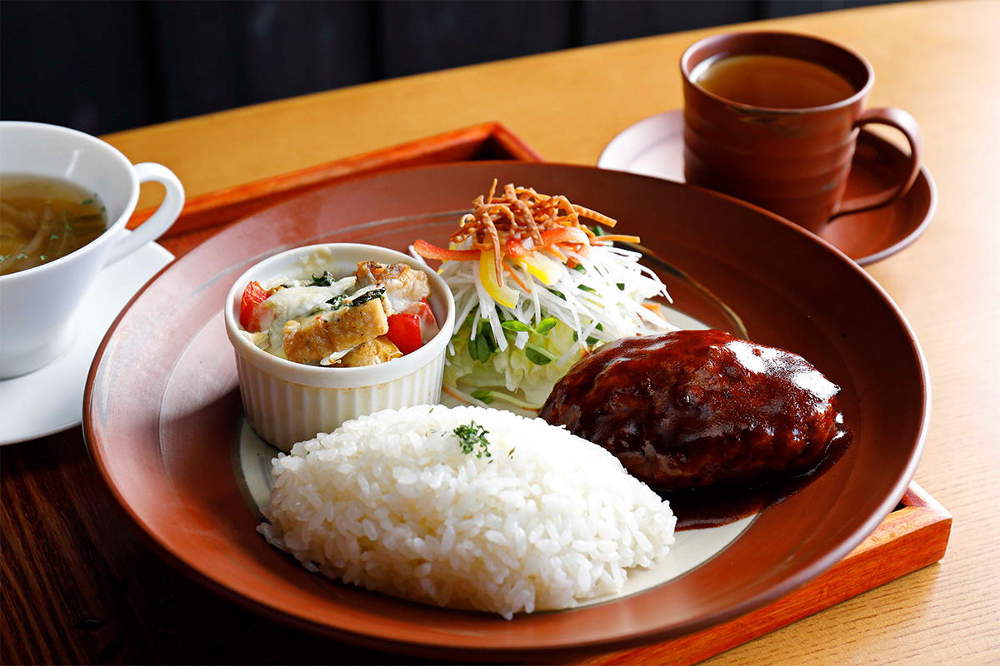
«Кёмати-тэй» это кафе в старом доме эпохи Эдо, откуда открывается вид на Аикаву. Свиней «Сима-куробута» растят на ферме, где следят за кормом и пускают отходы обратно в оборот, и из их мяса здесь делают гамбургеры. На острове растёт около 1700 видов растений, и из местных трав в кафе готовят напитки.
«Кёмати-тэй»
- Адрес
- префектура Ниигата, Садо, Аикава-Яоятё, 13
- Телефон
- +81 259-67-7538
- Часы работы
- обед 11:30–14:30 (последний заказ в 14:00), кафе 14:00–17:00 (последний заказ в 16:00), ужин 18:00–22:00 (последний заказ в 21:00, по предварительной записи)
- Выходные
- вторник, среда (в праздники открыто)
После приисков можно пообедать в «Мотидая». Эту столовую с баром держит рыбная лавка «Мотида», которая работает в Аикаве больше полувека, и рыба здесь меняется по сезонам.
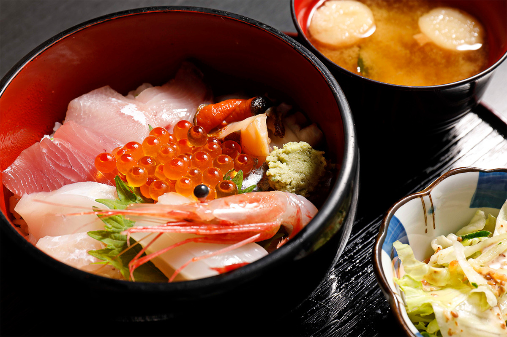
«Мотидая» и рыбная лавка «Мотида»
- Адрес
- префектура Ниигата, Садо, Аикава-Ититёмэ, 7
- Телефон
- +81 259-67-7268
- Часы работы
- 11:30–14:00 (последний заказ в 13:30), 18:00–21:00 (последний заказ в 20:30)
- Выходные
- воскресенье вечером, понедельник
- Сайт
- mochidaya.net
Традиционное ремесло острова это керамика «мумёи-яки». Её делают с 1819 года из красной глины Садо с оксидом железа, и вывозить эту глину с острова запрещено. Узоры на ней появляются при обжиге, и чем дольше пользуешься посудой, тем сильнее она блестит. В «Цубакия» собраны работы мумёи-яки и других гончаров острова: их можно купить, а по записи попробовать сделать что-нибудь своими руками.
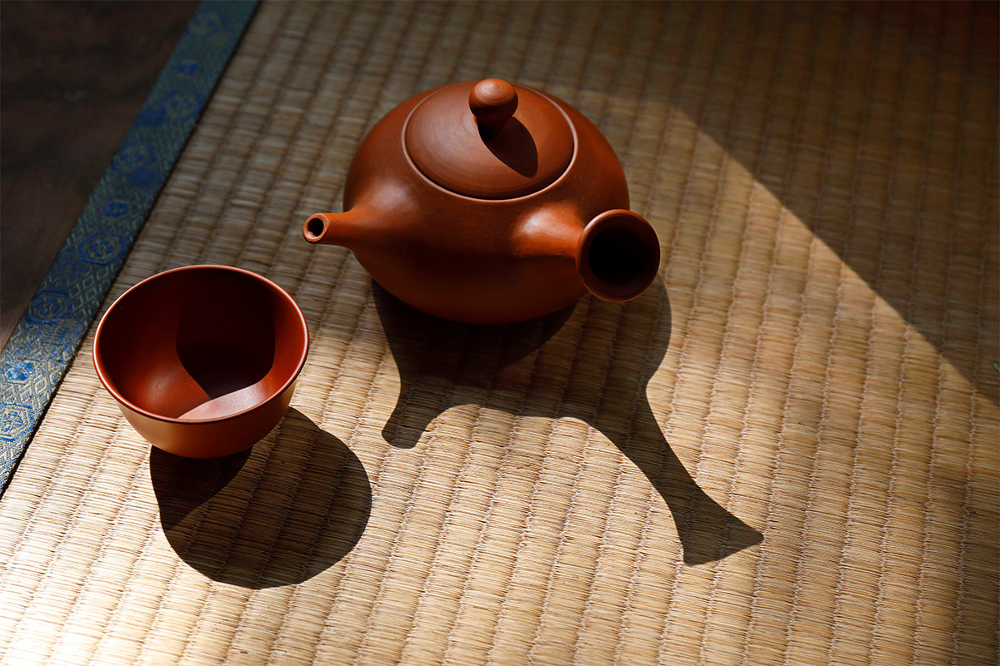
Керамическая галерея «Цубакия»
- Адрес
- префектура Ниигата, Садо, Кайдзука, 1111-1
- Телефон
- +81 259-63-5555
- Часы работы
- 10:00–16:00 (чайная «Цубаки тяя» 11:00–15:00)
- Выходные
- среда, зима
Вода
Китамаэбунэ: корабли, которые торговали в пути
Вторая тема поездки это вода, и здесь главное корабли китамаэбунэ. С середины эпохи Эдо до эпохи Мэйдзи они ходили между Осакой и Хоккайдо и не только возили грузы, но и покупали и продавали товары в каждом порту, как плавучие торговые дома. Таких портов было много и на берегу Ниигаты, и на Садо, и в каждом из них складывалась своя культура.
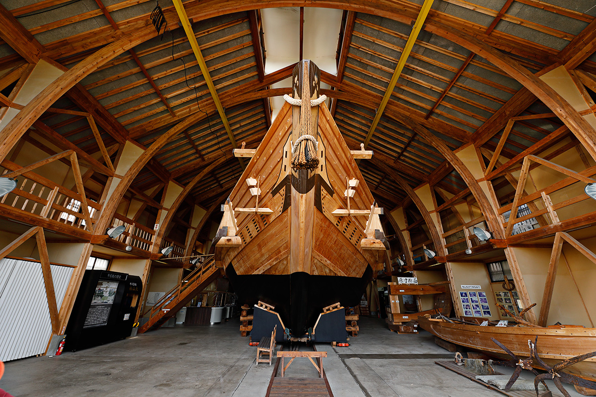
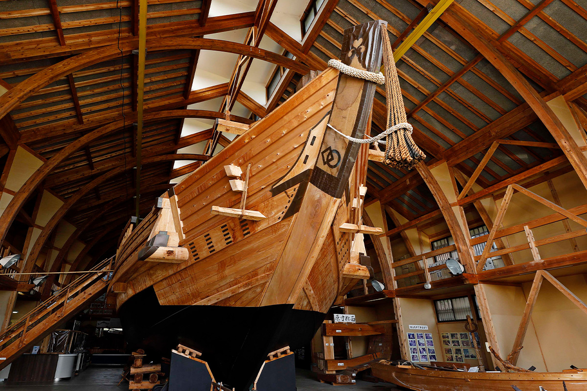
Одним из таких портов был Оги на юге Садо. В его деревне Сюкунэги стоят дома, построенные корабелами со всем их умением. В народном музее Оги по старым чертежам восстановили в натуральную величину «Хакусан-мару», большой грузовой корабль сэнгокубунэ. В самом музее собрано больше 30 000 вещей: рыболовные снасти, крестьянские орудия и инструменты корабелов 1955–1964 годов.
Народный музей Оги
- Адрес
- префектура Ниигата, Садо, Сюкунэги, 270-2
- Телефон
- +81 259-86-2604
- Часы работы
- 8:30–17:00
- Выходные
- без выходных (зимой понедельник)
- Цены / Вход
- 500 иен, школьники 200 иен
- Сайт
- shukunegi.com
Сюкунэги разбогател на постройке кораблей, и в лучшие годы здесь собиралась треть богатства всего Садо. На участке около гектара тесно стоят 110 построек. На узкой земле корабелы придумывали свои решения: «треугольный дом» в форме корабля, резные украшения под стрехой.
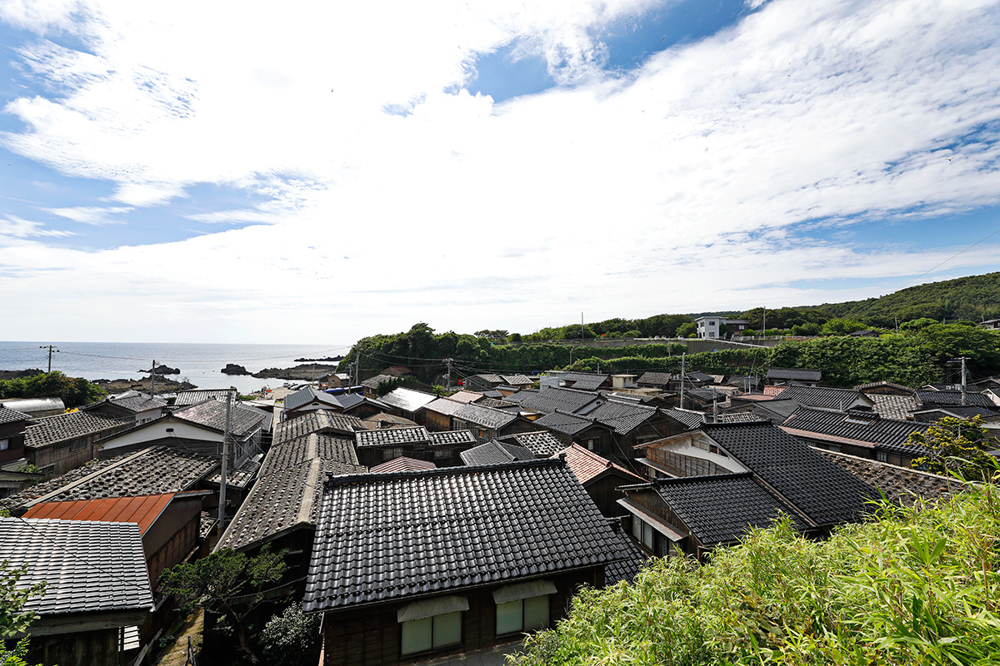
Гуляя по Сюкунэги, просят оставить около 100 иен на сохранение улиц. По Оги тоже водят местные гиды: в 2022 году от 2500 иен за час, запись за неделю через туристический центр юга Садо (+81 259-86-3200).
Деревня Сюкунэги
- Адрес
- префектура Ниигата, Садо, Сюкунэги, 416
- Цены / Вход
- взнос на сохранение улиц около 100 иен
- Сайт
- shukunegi.com
Порт
Идзумодзаки: куда привозили золото Садо
На берегу Хонсю золото и серебро Садо выгружали в порту Идзумодзаки, где заходили и китамаэбунэ. Город стоял ещё и на тракте Хоккоку-кайдо, который связывал две большие дороги страны, был землёй сёгуната и считался самым густонаселённым местом провинции Этиго. Дома здесь строили узким фасадом на улицу и длинными вглубь участка, вход делали со стороны треугольного фронтона. Такие дома называют «цумаири», и их ряд тянется примерно на 3,6 километра.
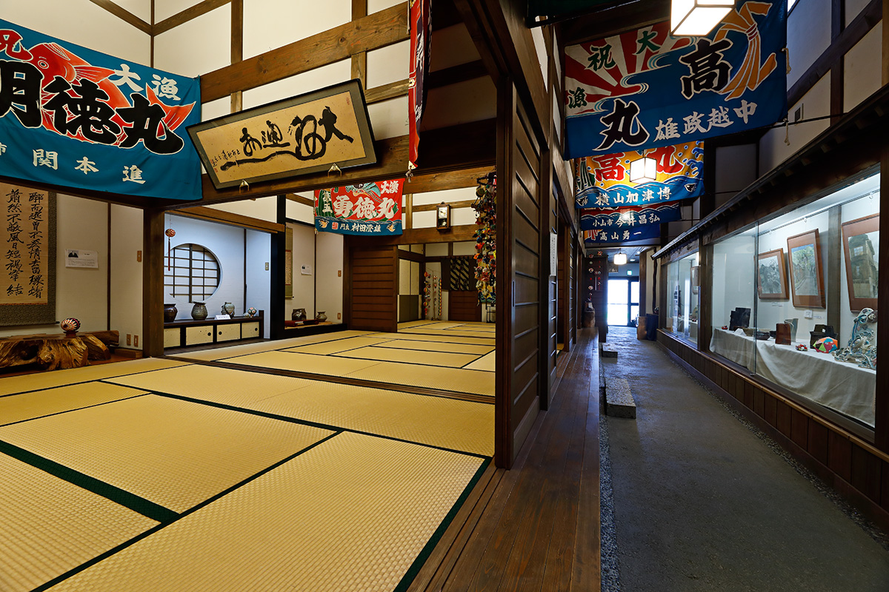
Дом цумаири на тракте Хоккоку-кайдо
- Адрес
- префектура Ниигата, уезд Санто, Идзумодзаки, Амадзэ, 166
- Телефон
- +81 258-78-3700
- Часы работы
- 9:00–18:00 (апрель–сентябрь), 9:00–17:00 (октябрь–март)
- Выходные
- без выходных
- Цены / Вход
- бесплатно
Комплекс «Этиго Идзумодзаки Тэнрё-но сато» построен вдоль берега с видом на Садо. В Зале эпох стоит судно сёгуната в масштабе 2:3 и воссоздан торговый дом тех времён, когда город принадлежал сёгунату. С моста «Юнаги-но хаси» смотрят закат, который здесь называют самым большим в мире.
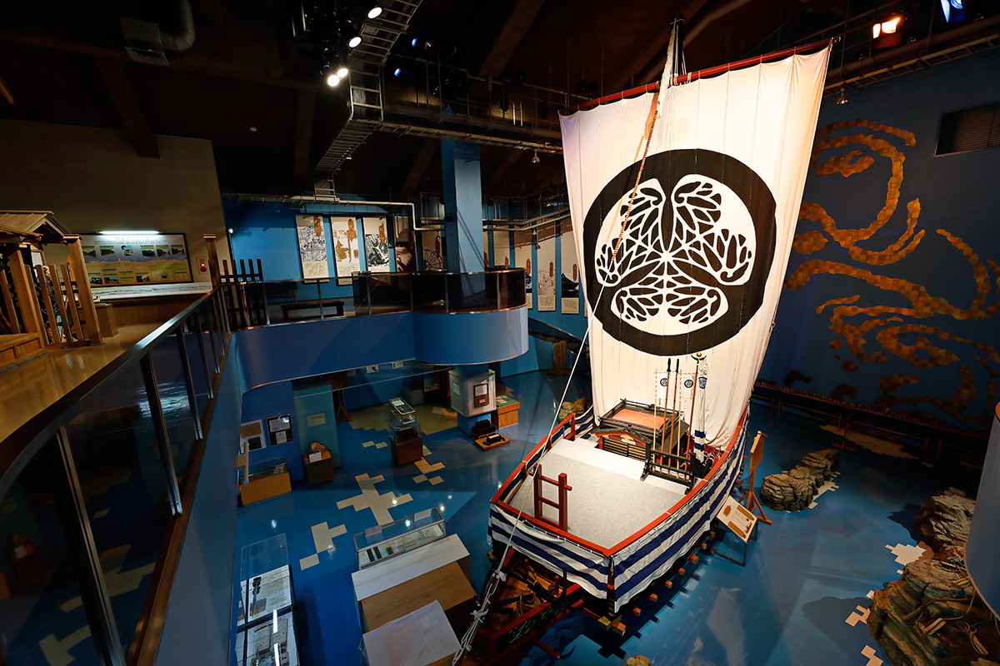
«Этиго Идзумодзаки Тэнрё-но сато»
- Адрес
- префектура Ниигата, уезд Санто, Идзумодзаки, Амадзэ, 6-57
- Телефон
- +81 258-78-4000
- Часы работы
- магазин 9:00–17:00, ресторан «Дзинъя» 11:30–15:00, Зал эпох 9:00–17:00 (конец марта–ноябрь), 10:00–16:00 (декабрь–начало марта)
- Выходные
- среда, новогодние праздники
- Сайт
- tenryo.pinoko.jp
Идзумодзаки был центром не только торговли, но и культуры области. Здесь родился Рёкан (1758–1831), дзэнский монах, поэт и каллиграф эпохи Эдо. Его почерк называют вершиной японской каллиграфии, а за мягкий нрав люди любили его и звали попросту по имени. А поэт Басё Мацуо (1644–1694), мастер хайку и автор путевого дневника «По тропинкам Севера», написал здесь одно из самых известных своих трёхстиший: «Бурное море! / Над ним до острова Садо / Млечный Путь простёрт».
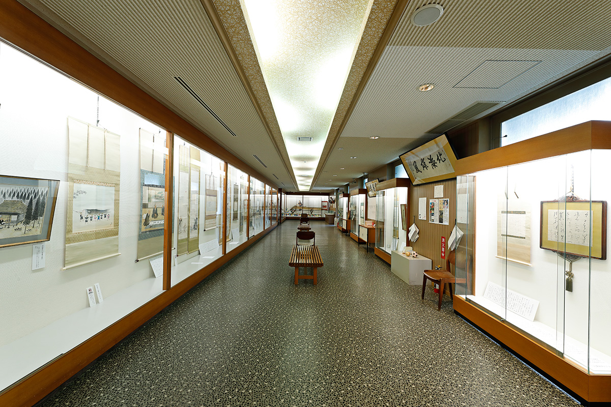
Музей Рёкана построил архитектор Ёсиро Танигути (1904–1979), и само здание внесено в реестр культурных ценностей страны.
Музей Рёкана
- Адрес
- префектура Ниигата, уезд Санто, Идзумодзаки, Комэда, 1
- Телефон
- +81 258-78-2370
- Часы работы
- 9:00–17:00
- Выходные
- среда (ноябрь–март; если праздник, то на следующий день), новогодние праздники
Маршрут
Как сложить всё в поездку
Маршрут по земле начинается в Этиго-Цумари: утром тоннель ущелья Киёцу с арт-инсталляцией, обед в «Икотэ», музей Токамати, прогулка вокруг «Нобутая» в Мацудае и ночь в онсэне Мацунояма, где рядом есть буковая роща для прогулки. На второй день обед в Tsubamesanjo Bit, мастерская Gyokusendo и музей истории промышленности Цубамэ, ночёвка в городе Ниигата.
На третий день скоростное судно за 67 минут довозит из порта Ниигата на Садо. Дальше обед в «Кёмати-тэй», «Кирариум Садо», прииски и старая фабрика, где обогащали руду, а вечером закат над морем в онсэне Аикавы. Утром стоит пройтись по старой улице Аикавы, а перед обратным судном заехать в «Цубакия».
Маршрут по воде идёт в обратную сторону. Сначала Идзумодзаки: морепродукты, жаренные на углях, улица домов цумаири, «Тэнрё-но сато» и Музей Рёкана, ночь в онсэне неподалёку. Потом исторический музей города Ниигата у порта, судно на Садо, музей Оги и деревня Сюкунэги с ночёвкой там же. На третий день «Кирариум Садо», прииски и обед в «Мотидая», вечером обратное судно и прогулка по старому кварталу Ниигаты. Последний день можно отдать городу: старому купеческому дому, смотровой площадке над портом и набережной реки Синано.
Фото: Норихито Судзуки, Акира Куваяма (amanaimages).